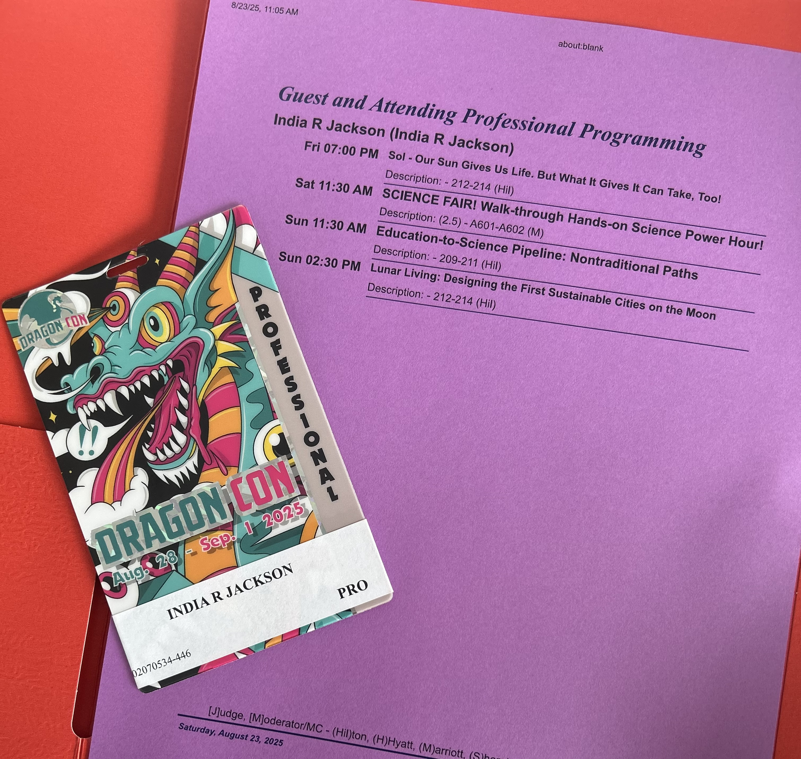
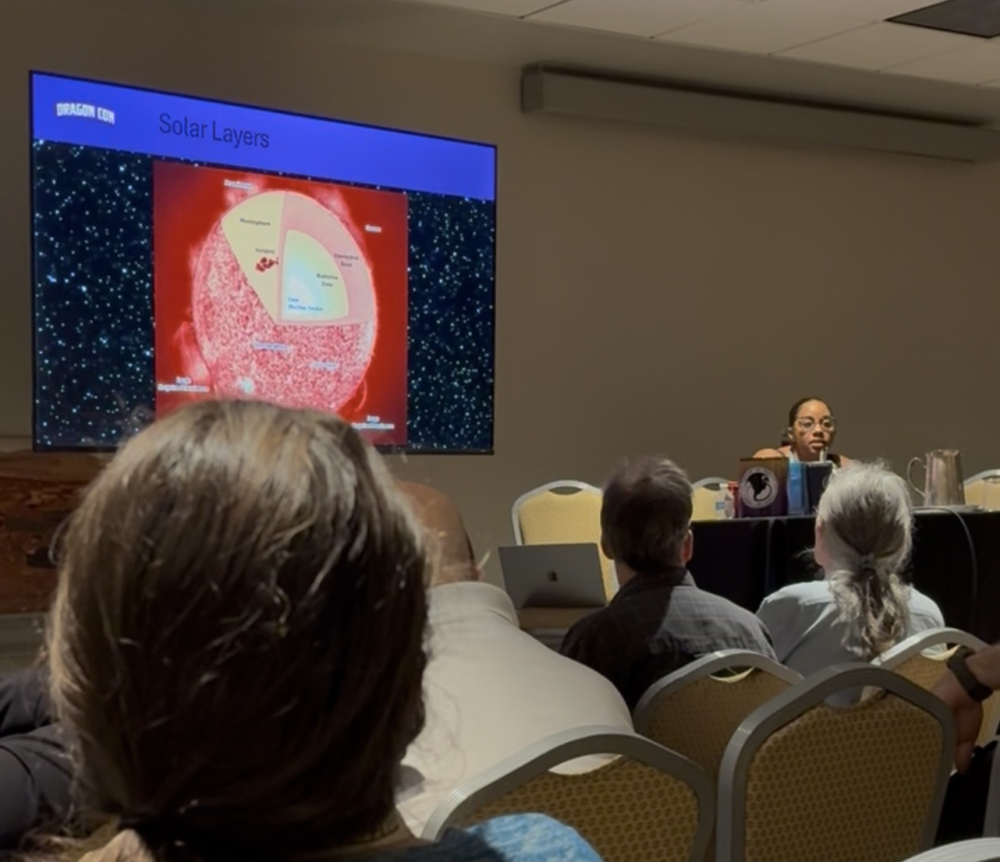
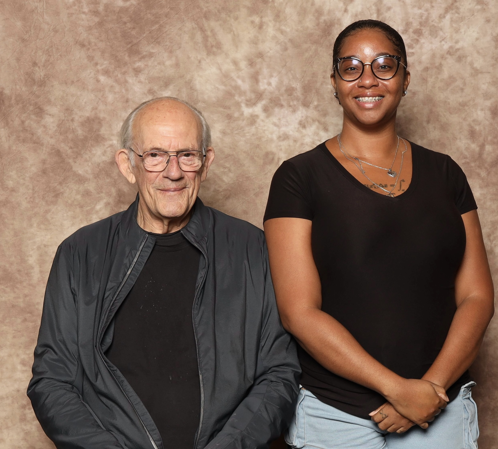
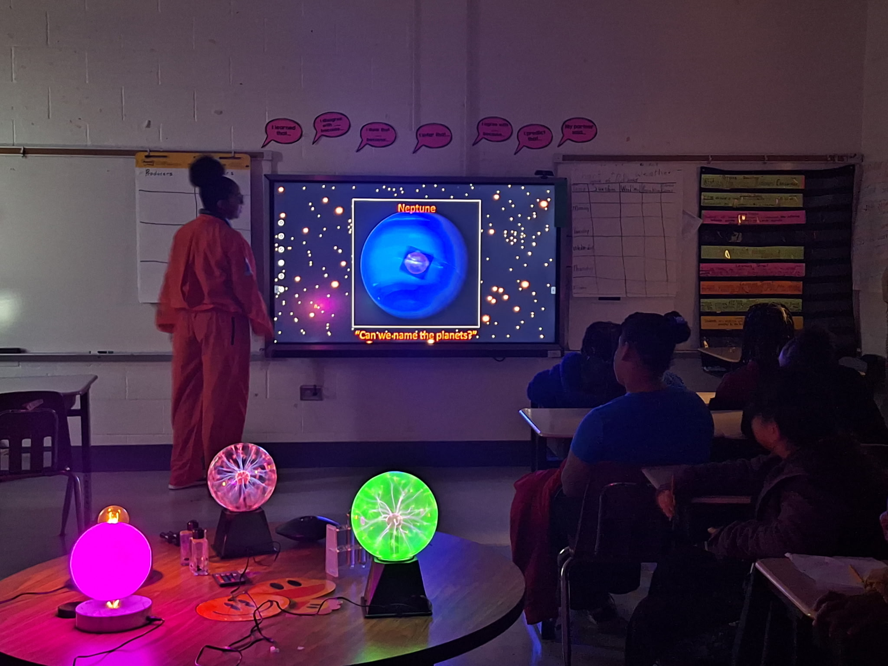
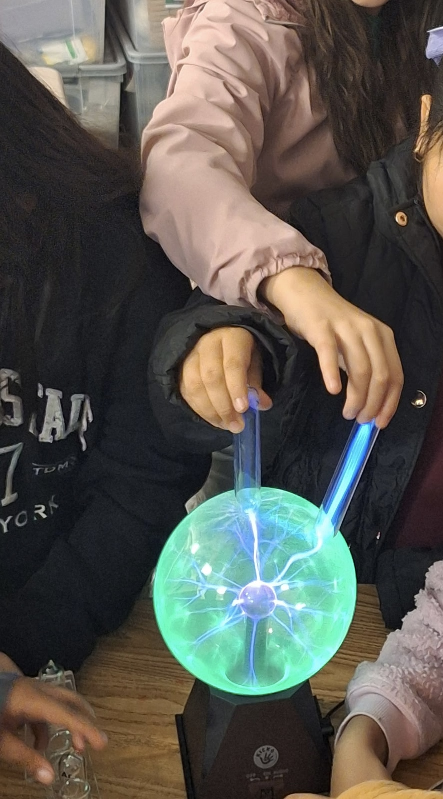
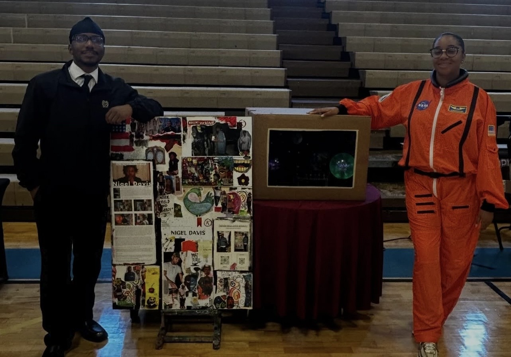

Public Engagement
Dragon Con
Dragon Con is the largest multi-media, popular culture convention focusing on science fiction, fantasy, gaming, comics, literature, art, music, and film.



Astronomy Day
Astronomy Day is a community-centered public engagement program designed to introduce students and families to real astronomical observation through telescopes, hands-on space science activities, and accessible learning experiences that connect space to everyday life.



